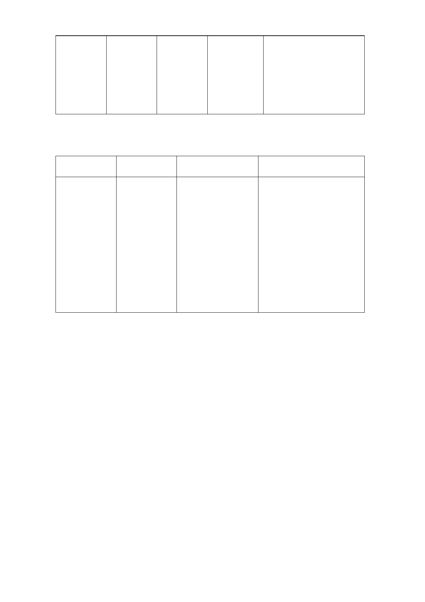

南港區
中 南 段 第三種
四小段
829 地 住宅區
號土地
第三種
住 宅 區 2,698
(特)
為推動本市公共住
宅政策，增加住宅
供給並提升居住品
質，滿足市民居住
需求。
（二） 土地使用分區管制
1. 使用強度：
使用分區 原計畫 新計畫
變更理由
第三種
建蔽
45%
住宅
(特)
區
容積
225%
率
建蔽率45%
率 容積率337.5%
為推動本市公共住
宅政策及充實住宅
存量，滿足市民居住
需求，在對公共設施
服務水準影響不大
之前提下，適度提高
土地使用強度，將基
準容積由225%調整
為337.5%。
2. 使用管制：
(1) 本計畫內第三種住宅區(特)比照臺北市土地使用分區管制自
治條例第三種住宅區規定辦理。
(2) 本案不得適用都市更新及其他容積獎勵，亦不得作為容積移轉
接受基地。
(3) 考量本市現有出租國宅及公共住宅停車位出租率僅達60%，故
本案法定停車空間得予以減設，其減設量不得超過30%，惟實
際留設停車空間應經「臺北市都市設計及土地使用開發許可審
議委員會」審議通過。
(4) 本計畫區得視實際需要開放部分停車空間供作公眾使用，開放
公眾使用之車位應集中設置並充分提供停車資訊。
（三） 擬定都市設計準則與都市防災計畫。（計畫書第10-13頁）
六、 事業及財務計畫：
- 13 -